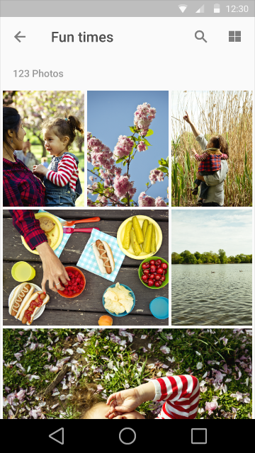

与 UI 集成 UI integration
合适的分辨率
仔细选择图片的大小，使其适合各种场景和平台。最好使用较大的图片，且不要让图片出现像素化的模糊。请在多种显示比例和不同的设备上进行测试。

合适的图片

被强行放大的图片
合适的比例
通过不同比例大小的图像配合，表达重点的内容。

在图册里，使用不同比例、大小的缩略图表达内容本身的区别。

在同一个系统中使用多种不同的框架。
保证文字的清晰
使用纹底保证文字的清晰可读。

深色的纹底根据背景的不同，透明度选择 20%-40%。浅色的纹底根据背景的不同，透明度选择 40%-60%。

纹底不要过度的虚化或覆盖背景图片。

对于大型的图片，使用专门的文字区域，而不要挡住图片。

过度虚化大型图片。
使用专门的色彩背景凸显文字，色彩背景的颜色根据内容进行选择，和图片并排显示，保证清晰的展现出文字内容。
您还可以使用品牌颜色来对图片进行处理。
头像和摘要
头像和摘要可以表示一条内容，它们可以是真实的照片或者抽象的图示。一般情况下点击头像或者摘要可以打开内容细节页面。
头像一般代表某个人，所以请提供个人化的选项，如果用户不选择进行设置，也请提供优雅的默认图片。有时也可以使用品牌 logo 作为头像。
摘要给用户提供主要内容的大概信息，您也可以在摘要中使用图片。
头像给用户个人化的感觉，还可以在很小的空间内表达足够多的信息。
摘要使用品牌作为头像，可以更好的表达内容大意，再加上图片，更加清晰。
Hero 图片
将 hero 图片放置在突出的位置，例如屏幕顶部的 banner。它们向用户提供当前内容的场景，或者用于突出品牌形象。
特色图像
特色图像突出当前内容，并放置在明显的位置。
Integrated hero image
嵌入的 hero 图像随着当前上下文的变化而变化，它们并不代表最重要的内容。
画廊
图像画廊通过整齐的图片表达一系列的内容。

照片组合